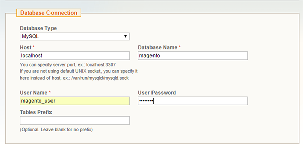

Setting up Magento on LAMP server, Applications, LAMP, PHP
Install and configure Magento on your LAMP server - Debian, Ubuntu
Difficulty: 1
Time: 45 minutes
Magento is a popular Content Management System (CMS) for e-commerce websites. This article explains the installation and configuration of Magento on Debian and Ubuntu.
Magento installation requires at least 2 GB of RAM. To install LAMP, please visit Build a LAMP stack (Linux, Apache, MySQL, PHP) – Debian or Build a LAMP stack (Linux, Apache, MySQL, PHP) – Ubuntu links.
You will need access to sudo privileges to perform the steps given in this article.
Configure PHP and Apache
PHP and Apache can be configured to handle Magento’s traffic and computing tasks properly. In addition, some additional packages will be required to install.
Configure the virtual host of Apache
You need to configure a virtual host to let Apache know how to manage the site properly.
- Create a new virtual host file at
/etc/apache2/sites-available/. You can name this virtual host magento if you want, or another name.
sudo vim /etc/apache2/sites-available/magento.conf
- Paste the following code in this file:
<VirtualHost *:80>
DocumentRoot /var/www/html
<Directory /var/www/html/>
Options Indexes FollowSymLinks MultiViews
AllowOverride All
</Directory>
</VirtualHost>
- Save and exit the file pressing the Esc key, and then typing :wq, followed by the Enter key.
- Enable the new site with Apache.
sudo a2ensite magento.conf
- Disable the default virtual host.
sudo a2dissite 000-default.conf
If you not find the 000-deafault.conf file in Debian, use the following command:
sudo a2dissite 000-default
Configure PHP
- To increase the memory limit of PHP, open the PHP configuration file
/etc/php5/apache2/php.ini in a text editor.
sudo vim /etc/php5/apache2/php.ini
- Search for
memory_limit, and then change the value from 128M to 512M.
memory_limit = 512M
- Save and exit the file pressing the Esc key, and then typing :wq, followed by the Enter key.
- Magento needs a few additional PHP modules. To install these, use the following commands:
sudo apt-get update
sudo apt-get install libcurl3 php5-curl php5-gd php5-mcrypt rsync tar
- To enable URL rewriting support for Apache and encryption support for PHP, use the following commands:
sudo a2enmod rewrite
sudo php5enmod mcrypt
- Restart the Apache service.
sudo service apache2 restart
Create User and MySQL database
- Log in into MySQL root account with the following command:
mysql -u root -p
- Create a database with the name magento, you may give any name.
CREATE DATABASE magento;
- Create a user magento_user, and then assign a password password to it.
CREATE USER magento_user@localhost IDENTIFIED BY 'password';
- To grant privileges, type:
GRANT ALL PRIVILEGES ON magento.* TO magento_user@localhost IDENTIFIED BY 'password';
- Exit from the MySQL command prompt.
FLUSH PRIVILEGES;
exit
Download Magento
- Use
wget to get Magneto files at home directory.
cd ~
wget http://www.magentocommerce.com/downloads/assets/1.9.0.1/magento-1.9.0.1.tar.gz
- Extract with tar files.
tar xzvf magento-1.9.0.1.tar.gz
- You can see magento directory in your home directory. Move these unpack files to Apache’s document root.
sudo rsync -avP ~/magento/. /var/www/html/
rm -rf ~/magento*
- Give ownership of the file to Apache’s user and group.
sudo chown -R www-data:www-data /var/www/html/
Complete installation
- Access the web interface: http://server_ip.
- Agree to the terms, and click Continue.

- Select the appropriate field, and click Continue on the next page. You will be asked for a language, time zone, and currency.

- Enter the username and password that you created during setup.

- Change the link for admin interface here. By default, it is admin. To improve search results, consider selecting Use Web Server (Apache) Rewrites.
- Select how you want your data stored.
-
To store session data in a file, select File System.
- To store the session data in the MySQL database, select Database System, which is the preferred choice when an installation is distributed on multiple servers.
For now, select File system, and then click Continue.

- Create an admin account on the next screen. You may leave the encryption key blank, unless you are migrating data over some existing installation. By leaving it blank and clicking Continue, a new encryption key will be generated. Store the encryption key somewhere safe, so that you can use it later, if you need to migrate in the future.

- On the next screen, you will find a survey from Magento, and at the bottom, links for frontend and backend. The process of installing Magento on LAMP server is complete.
Conclusion
In this article, you learned the steps to install and configure Magento on a LAMP server. You can now start building your site and selling your products.